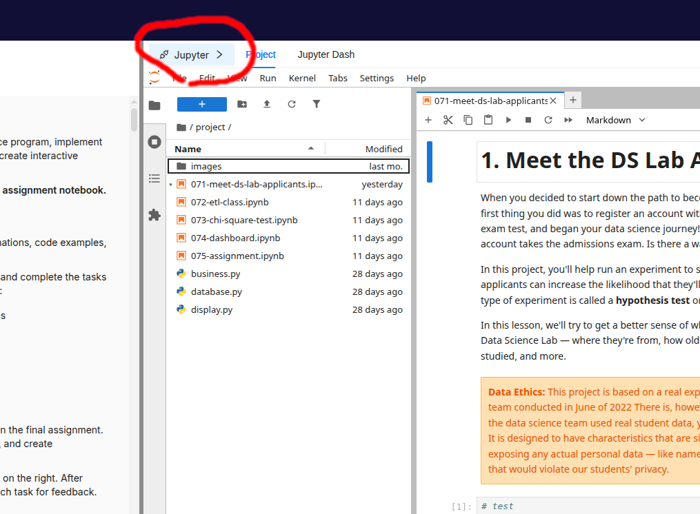

MongoDB Host Access from Jupyter
Some students have had trouble connecting to their MongoDB instance from a notebook after moving to the current platform. The most common reason is that the new platform uses a different network configuration than the previous one.
Do not connect to localhost. Use the MongoDB host address provided by the platform.
Find the MongoDB Host
In the platform, click the Jupyter button.

This opens a pop-up with the Jupyter and MongoDB connection details. Copy the MongoDB IP address shown there.
In your notebook, store that address in a variable. For example, an IP address usually looks like four numbers separated by dots:
host = "192.168.1.25"Use the actual MongoDB IP address from your platform pop-up, not the example above. If you want more background on what IP addresses are, see the Wikipedia page about IP addresses.
Then use the host variable when you create the MongoDB client:
from pymongo import MongoClient
client = MongoClient(host=host, port=27017)Using a variable makes the notebook easier to update. If the IP address changes later, you only need to update the host value in one place.
Common Error: Connecting to Localhost
If you see an error like this, your code is trying to connect to localhost:
ServerSelectionTimeoutError: localhost:27017: [Errno 111] Connection refusedThe important part is localhost:27017. That means the notebook is looking for MongoDB on the notebook machine itself, not on the MongoDB host provided by the platform.
This usually happens when the code still looks like this:
client = MongoClient(host="localhost", port=27017)Change it to:
client = MongoClient(host=host, port=27017)Why host=host Is Correct
The expression host=host can look confusing at first because the same word appears twice.
In this line:
client = MongoClient(host=host, port=27017)The first host is the parameter name expected by MongoClient.
The second host is the variable you created earlier:
host = "your-mongodb-ip-address"So host=host means: pass the value stored in the host variable to the host parameter.
Another Common Mistake: Using "host" as Text
If your error message mentions something like host:27017, check whether your code uses quotation marks around host:
client = MongoClient(host="host", port=27017)That is different from host=host.
"host" is just the literal text host. Python will not replace it with your variable value.
Use this instead:
client = MongoClient(host=host, port=27017)How to Read the Error Message
Error messages usually include useful clues. For MongoDB connection issues, look for the host and port in the message:
localhost:27017usually means the code is still usinglocalhost.host:27017usually means the code is using the string"host"instead of the variablehost.- A platform IP followed by
:27017means the code is at least trying the intended host, so the next thing to check is whether the copied IP address is correct.
The error type is also useful. ServerSelectionTimeoutError means the client could not reach a MongoDB server before the timeout. In this case, the cause is often the wrong host address.
When You Still Need Help
If you have checked the host value and still cannot connect, reach out to the support team or attend an Office Hours session. Include the exact error message and the connection code you are using, but do not share private credentials.